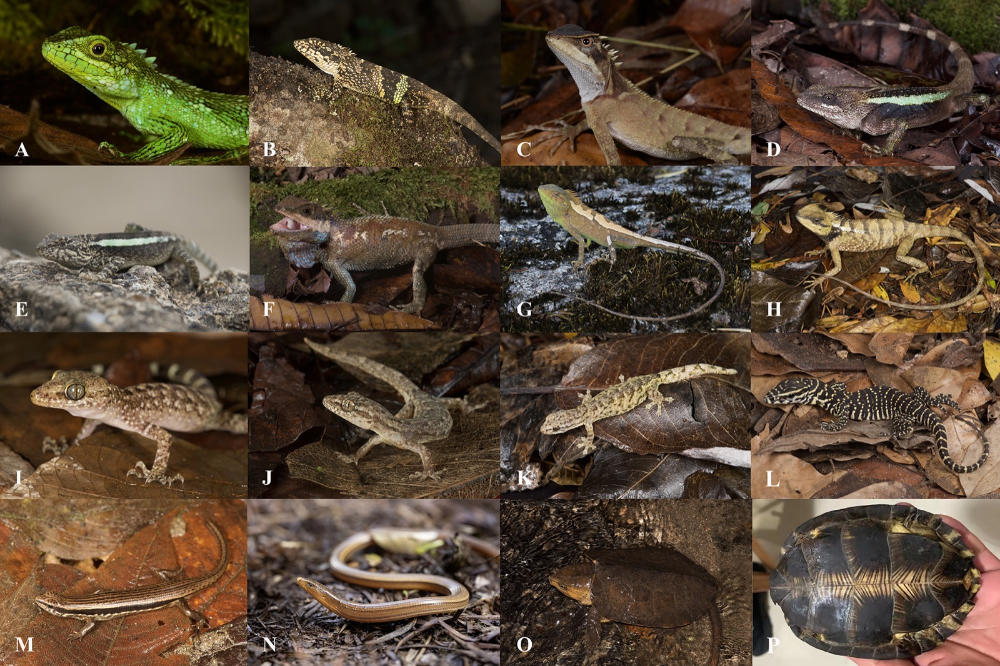

Taxonomic and Spatiotemporal Patterns and Ecological Correlates of New Mammal Distribution Records in China
系统揭示中国哺乳动物新分布记录的时空格局与生态关联，为新纪录发现机制和保护优先区识别提供量化证据。
DOI: 10.1111/geb.70165
Academic Profile
北京大学 - IIASA 联合博士后研究员，主要从事全球变化生物学、保护生物学与生物地理学研究。
我目前在北京大学与国际应用系统分析学研究所（IIASA）开展联合博士后研究。 研究重点是理解土地利用变化、极端气候事件与生物多样性响应之间的耦合关系， 以及这些变化如何转化为可操作的保护优先策略。
系统揭示中国哺乳动物新分布记录的时空格局与生态关联，为新纪录发现机制和保护优先区识别提供量化证据。
DOI: 10.1111/geb.70165在全球尺度评估干旱区鸟类对热浪的脆弱性，识别高风险地区与关键保护对象，支持面向极端事件的适应性管理。
DOI: 10.1111/gcb.17136基于证据链评估豚鹿在中国可能区域性灭绝的风险，提出面向边缘种群与跨境保护协同的策略建议。
DOI: 10.1017/S0030605321000016构建中国哺乳动物形态、生活史与生态特征数据集，为功能多样性评估、宏生态建模和保护决策提供基础数据支撑。
DOI: 10.17520/biods.2021520结合地质与气候历史过程，解释青藏高原特有陆生脊椎动物的起源路径，丰富高海拔生物区系形成机制研究。
DOI: 10.1111/geb.13286提供阿尔泰地区鸟类区系调查与多样性格局证据，为区域生物多样性监测和生态保育规划提供基线信息。
DOI: 10.17520/biods.2019023以下图片来自你的研究汇报材料，用于展示野外调查与生物多样性研究场景。


北京市自然科学基金青年项目（主持）
2026 - 2028